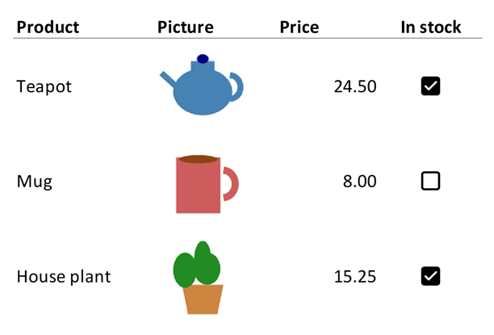

Images
Adding or deleting images changes the workbook, so open the file with mode="rw" (or start from XLSX.newxlsx) and save it afterwards. The functions that only read work on any file.
XLSX.addImage places a PNG, JPEG or GIF image on a worksheet. The image floats above the grid, as a picture inserted in Excel does. It does not change any cell, and it can be moved and resized in Excel as usual.
The image's top-left corner is anchored to a cell. With a single cell, the image keeps its own pixel size, or the size you give:
XLSX.openxlsx("report.xlsx", mode="rw") do xf
sheet = xf["Summary"]
XLSX.addImage(sheet, "B2", "logo.png") # native size
XLSX.addImage(sheet, "H2", "photo.jpg"; size=(200, 150)) # width, height in pixels
endWith a cell range, the image is stretched to fill it and size is ignored:
XLSX.addImage(sheet, "B10:F20", "chart.png")The image can also come from an IOBuffer, for example a plot rendered in memory. The buffer is read without being consumed:
io = IOBuffer()
# ... write PNG bytes to io, e.g. with a plotting package ...
XLSX.addImage(sheet, "D2:H12", io)Adding a plot image has a complete example with a Makie plot. To add a chart that Excel draws from the cells, and that updates when they change, see Adding a simple native Excel chart instead.
An image's size snaps to whole cells. The calculation assumes Excel's default cell size of 64 × 20 pixels, so an image over resized columns or rows is stretched or squeezed to fit the cells it spans.
XLSX.getImages lists the images on a sheet, or in the whole workbook. Each one is a NamedTuple giving the sheet, the internal media name and the cells at its top-left and bottom-right corners:
julia> XLSX.getImages(sheet)
2-element Vector{@NamedTuple{sheet::String, media_name::String, from::String, to::String}}:
(sheet = "Summary", media_name = "image1.png", from = "B2", to = "D5")
(sheet = "Summary", media_name = "image2.png", from = "H2", to = "J9")XLSX.deleteImage deletes the images whose top-left corner is in a cell, or one image from getImages, and returns how many it deleted. The picture file goes too, unless another image in the workbook shows it:
XLSX.deleteImage(sheet, "B2") # 1
foreach(img -> XLSX.deleteImage(sheet, img), XLSX.getImages(sheet)) # every imagePictures in cells
Excel 365 can also put a picture in a cell, with Insert → Pictures → Place in Cell. The picture is then the cell's value: it sizes itself to fit the cell, and moves, sorts and filters with the row like any other value. This suits a column of product photos or logos in a table.

Write a XLSX.CellImage to the cell, or give XLSX.addImage the keyword inCell=true. Both take a PNG, JPEG or GIF file or an IOBuffer, and alternative text for screen readers:
sheet["B2"] = XLSX.CellImage("teapot.png"; alt="Teapot")
XLSX.addImage(sheet, "B3", "mug.png"; inCell=true, alt="Mug")To make the picture bigger, make its cell bigger with XLSX.setRowHeight and XLSX.setColumnWidth. A column of pictures can be written with XLSX.writetable too, as a column of CellImages. A workbook stores each picture once, however many cells show it.
A picture isn't data, so a cell holding one reads as missing with sheet["B2"], XLSX.readtable and the other functions that read values. Excel stores the error #VALUE! in the cell for programs that don't know about pictures in cells, so XLSX.iserror is true for it. XLSX.getCellImage reads the picture, and XLSX.getCellImages lists every picture in a sheet's cells:
julia> img = XLSX.getCellImage(sheet, "B2")
CellImage(:png, 2502 bytes, alt="Teapot")
julia> write("teapot.png", img.bytes);
julia> [p.cell for p in XLSX.getCellImages(sheet)]
3-element Vector{String}:
"B2"
"B3"
"B4"They also read a picture that an IMAGE formula shows, whose url field gives the picture's web address. To write one of those, write the formula with XLSX.setFormula: Excel fetches the picture when it opens the file.
To remove a picture, write another value to its cell, missing to leave it empty, or use XLSX.deleteImage, which also deletes a floating image whose corner is in the cell. The cell keeps its format.
Pictures in cells need Excel 365. Older versions of Excel, and other programs, show #VALUE!.
See also
- API: Images, comments and hyperlinks
- Related guides: Creating charts, for charts Excel draws from the cells
- Examples: Adding a plot image, Adding a simple native Excel chart